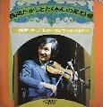

ディスコ2
■1973-2002年：五つの赤い風船解散から、現在までの西岡たかしのアルバム
作品一覧
先頭の●をクリックすると、その作品へジャンプします。●はアナログディスク(AD)、●はCDを表します。
●●満員の木 ●●西岡たかしとたくさんの風船達 ●●ともだち始め

●子供たちに贈る愛の詩 ●モス ●十年目〜大阪ライブ
西岡たかしベストコレクション
● 西岡たかし’９２ ●50＋ＯＭＡＫＥ ●瞳の青年 西岡たかしwith piano
| side A |
side B |
| 1 |
大阪弁 |
６ |
ぷろふぇっしょなるじぃじぃ |
| 2 |
満員の木 |
７ |
君とボク、ボクと君 |
| 3 |
一人の女 |
８ |
同棲 |
| 4 |
終りの季節 |
９ |
SE |
| 5 |
みれん |
10 |
妻になる女に |
|
|
11 |
みんないい人 |
|
|
12 |
SE |
西岡たかし 唄・演奏
中川イサトベース・リードギター(SIDE2-1)
録音 1972年7月11.12.14.15日8月13日10月13日11月10・11・18・19日 モウリ第1・第2スタジオ |
LP- URCレコード (URG-4018) 1973年2月
CD- キティレコード(URC) (H20K25040) 1989年10月25日 東芝EMI TOCT-9292/1995.12.6
Avex IOCD-40024/2002.10.9 |
コメント （おおふじ）風船解散後、初のソロアルバム。ほとんど西岡さん一人で演奏した多重録音。
小室等がこのアルバムについて、演奏はいろいろなミュージシャンと共演するのが楽しいのだから、一人で多重録
音したらつまらない、と批評したことがある。 |
| side A |
side B |
| 1 |
フォーク脱出計画 |
５ |
満員の木 |
| 2 |
貝殻節 |
６ |
血まみれの鳩 |
| 3 |
クソッタレ ヂヂー |
７ |
遠い世界に |
| 4 |
大阪弁 |
８ |
スクラッチノイズ |
西岡たかし 唄・ギター・リュート
石丸寛指揮/演奏 日本フィルハーモニー交響楽団 |
LP ビクター音楽産業 SF-1036 1973月5月25日
CD ビクター音楽産業 VICL-2096 1992年9月23日 ビクターエンタテインメント VICL-62152 2006.10.25 |
| コメント |
| side A |
side B |
| 1 |
風人(かぜひと) |
１ |
ジャンジャン町ぶるうす |
| 2 |
風言葉(かぜことば) |
２ |
英雄『風』 |
| 3 |
宝島 |
３ |
てきとうな話 |
| 4 |
緑の子 |
４ |
ロック・アウト・スウィング |
| 5 |
子供たち |
５ |
亡者 |
|
|
６ |
嘘 |
西岡たかし/唄・バンジョー・ハーモニカ・アコースティックギター・ピアノ・エレキピアノ
中川イサト/アコースティックギター
渋谷毅/ピアノ |
LP エレックレコード ELW-3006 1973年12月 (廃盤)
ＣＤ VAP/エレックレコード VPCC-84562 2006.7.26 |
コメント （おおふじ）西岡さんは泉谷さんの唄に、ギター、バンジョー、ハーモニカなどで参加していますが、泉谷
さんは、西岡さんの唄にまったく参加していません。泉谷さんの演奏技術が未熟だったためらしいです。（ギヌさん
の情報）
SIDE C/D は、「泉谷しげる」の盤なので、記載してありません。
・ＣＤ復刻のあと、西岡さんのお話を聞きました。泉谷さんが参加していない件は、エレック側の準備が悪く、まった
く打ち合わせなどがないままレコーディングに入ったためだそうです。お互いスケジュールが忙しかったことも原因
のようでした。また、このアルバムについては、ライブのようなよさがあるので気に入っていると言われていました。
「ボクが一番気に入っているのは、レコーディングより前に(アレンジなどに使うために)自分で吹き込んだ歌なんで
すけどね。それお聞かせすることはできませんけど。」ともおっしゃっていました。うーん、聞きたい。 |
| side A |
side B |
| 1 |
プロローグ |
１ |
風の人 |
| 2 |
哀しい歌 |
２ |
君の気持ち |
| 3 |
なつかしの金魚鉢 |
３ |
アファヌスそよ風 |
| 4 |
心から愛をこめて |
４ |
べろろんワルツ |
| 5 |
すまあと |
５ |
私はバラバラにちぎれてしまった |
| 6 |
NANKA-SYOKA |
|
|
| 7 |
すとらいき |
|
|
松岡直也・大原繁仁/ピアノ猪俣猛/ドラムス中牟礼貞則・水谷公生・高中正義/ギター寺川正興/E.ベ
ース金山功/パーカッション山口弘治/ホーン
坂逸郎/オーボエ羽鳥幸次/トランペット市原宏祐/サキソフォン相馬充/
バロックフルート風間文彦/アコーディオン山川恵子/ハープ近藤 /コントラバス
ビクターストリングス/ストリングス シンガーススリー/コーラス |
LP ビクター音楽産業 SF-1047 1975年1月25日(廃盤)
ＣＤ ビクターエンタテインメント VICL-62153 2006.10.25 |
| コメント |
| side A |
side B |
| 1 |
雪・ゆき |
７ |
私は弱い旅人ではない |
| 2 |
WIND'Y SOUP |
８ |
サラダ |
| 3 |
鳥 |
９ |
若草の部屋 |
| 4 |
上野市 |
10 |
花と空に・・ |
| 5 |
甘い思いのピアニスト |
11 |
倖せは君を見捨てはしない |
| 6 |
トマト |
12 |
エピローグ（LP では、終わりの信号) |
|
|
13 |
ユデタマゴ（CDのみ収録) |
ドラム/すずき君 ベース/高水君・岡沢君 ギター/ボク(西岡たかし)・水谷君・松本君
ビアノ/飯吉さん パーカッション/穴井氏 クラリネット/北村英治さん |
LP ビクター音楽産業 SF-1059/10042 1975年8月25日(廃盤)
CD ビクター音楽産業 VICL-2097 1992年9月23日 ビクターエンタテインメント VICL-62154 2006.10.25 |
コメント すーさんとにかく歌詞カードがすごい。LPジャケットの三倍の大きさ。表には西岡さんの全身写真、裏に
はイラスト入りの手書きの歌詞。必見の価値ありです。 |
| side A |
side B |
| 1 |
あなたの鳩に一輪の花 |
１ |
幻の翼と共に |
| 2 |
恋人もいないのに |
２ |
みどりの子 |
| 3 |
夢袋 |
３ |
恋は風に乗って |
| 4 |
ジャンジャン町ぶるうす |
４ |
人魚 |
| 5 |
木枯しエレジー |
５ |
もしもボクの背中に羽根が生えてたら |
| 6 |
ボクは二人の船長さん |
６ |
遠い世界に |
唄 西岡たかし／西岡ゆき／マルニ児童合唱団
編曲 萩田光雄／西岡たかし |
LP ビクター SF-10049 1975年11月25日(廃盤)
ＣＤ ビクターエンタテインメント VICL-62176 2006.11.22 |
コメント おおふじオリジナル曲と以前発表した曲、他のミュージシャンに提供した曲のカバーで構成されている。
西岡ゆきさんが3曲参加しており、魅力的な声で歌っている。全体のトーンがとても明るい。「木枯らしエレジー」ま
でが、他での演奏に比べて明るい。これは、西岡さんの結婚記念アルバムではないか、と私は思う。 |
| side A |
side B |
| 1 |
前奏曲 |
１ |
花と空に・・・ |
| 2 |
小さな夢 |
２ |
上野市 |
| 3 |
哀しい歌 |
３ |
ジャンジャン町ぶるうす |
| 4 |
母の生まれた街 |
４ |
唄 |
|
|
５ |
めし屋 |
|
|
６ |
幻の翼と共に |
|
|
７ |
遠い世界に |
ベース /高水健司 ギター/安川ひろし ピアノ/市川秀男
バイオリン/玉野嘉久・田中栄一・森岡美穂子・安西一陽・藤原祥隆・脇精一
ウ゛ィオラ/遠山克彦 チェロ/阿部雅士
1975年11月3日 中野サンプラザ実況録音 |
| LP ビクター音楽産業 SF-10053 1976年1月25日(廃盤) |
コメント おおふじストリングスメンバーを招いてのソロライブ録音盤。前奏曲の風船メドレーが美しい。このライブに
行きました。 |
| side A |
side B |
| 1 |
君がやってくる(まるでこの町の風のよ
うに) |
1 |
夏(丁度いい風向き) |
| 2 |
森へ出かけよう(風のバイクで・・・!) |
2 |
PLASTIC WIND(PART 1) |
| 3 |
PLASTIC WIND(PART 2) |
3 |
風車(KAZE・GURUMA) |
| 4 |
夢を忘れた友達よ(そして風のように) |
4 |
かえり道(秋風・夕暮れ・春) |
| 5 |
春には一つの思い出を(思わせぶりな
風達に) |
5 |
風博士(KAZE・HAKUSHI) |
ぴあの、きーぼーど、そりーな/大原繁仁 えれきべーす/伊東昌明、寺川正興
どらむ/宗台春男、森谷順 ぎたー/吉川忠英、西岡たかし
ぶるーすはーもにか/森本恵夫、西岡たかし えれきぎたー/矢島賢
ぱーかっしょん/川原直美、穴井忠臣はーぷ/山川恵子
もーぐ、しんせさいざー/萩田光雄、いしだかつのり
すとりんぐす/多 是彰ぐるーぷ ばんじょー/吉川忠英
ふらっとまんどりん/竹内郁子ぐるーぷ すちーるぎたー/石田新太郎
とらんぺっと/羽鳥幸次ぐるーぷ
とろんぼーん/新井英治ぐるーぷ てなーさっくす/鈴木正男 ふるーと/小山岳、小山道也
録音 1976年2月16〜19日、3月18〜20日 ビクターNo.1、2、3スタジオ |
LP ビクター音楽産業 SF-10059 1976年5月25日(廃盤)
ＣＤ ビクターエンタテインメント VICL-62155 2006.10.25 |
| コメント |
| side A |
side B |
| 1 |
.愛すコーヒー |
1 |
花の思い出 |
| 2 |
あなたの夢 |
2 |
小さなコンサート |
| 3 |
どうしようもないTWILIGHT TIME |
3 |
君は今が美しい |
| 4 |
うろこ雲の絵 |
4 |
わたし |
| 5 |
バラのお嬢さん〜薔薇の円舞曲 |
5 |
ロバの耳〜1月の夏 |
ピアノ・エレクトリックピアノ/小池秀彦・永田一郎 ピアノ/エジソン
エレクトリック ギター/牧野元昭・佐野光利 アコースティックギター/吉川忠英・西岡たかし
ドブロギター/西岡たかし エレクトリックベース/高島正博・伊東広規・長岡道夫
ドラムス/青山純・鈴木正夫 パーカッション/川原正美・川原直美
スチールギター/石田新太郎 ブルースハーモニカ/西岡たかし
モーグシンセサイザー/いしだかつのり ストリングス/玉野グループ・多グループ
ソリナ/いしだかつのり
録音 1976年11月〜12月 ビクタースタジオ |
| ビクター音楽産業 SF-10066 1977年2月25日(廃盤) |
コメント おおふじこの頃のアルバムはストリングスを多用した美しいサウンドで仕上がっている。1976年、イルカ
と「なかよしコンサート」を通して詞と曲を提供しあった「バラのお嬢さん」が加えられている。
個人的には、一番思い入れの深いソロアルバムです。 |
| side A |
side B |
| 1 |
風の詩 |
1 |
日曜日 |
| 2 |
風っ子 |
2 |
どうして言っちゃいけないの |
| 3 |
それからね |
3 |
魔法じかけの探検家 |
| 4 |
モゴモゴのお話 |
4 |
病気はやだな |
| 5 |
仔犬のシロ |
5 |
おかあさんの手 |
イルカ作詞/西岡たかし作曲/いしだかつのり編曲
歌：西岡たかし
コーラス：劇団若草（Ａ−２、Ｂ−３，４）
語り：イルカ（Ａ−４）
ピアノ・エレクトリックピアノ/小池秀彦・永田一郎 エレキギター/牧野元昭・松浦善博
アコースティックギター/吉川忠英・西岡たかしエレキベース/伊藤広規 ドラムス/青山純
パーカッション/川原正美・川原直美 ハーモニカ/森本憲夫
シンセサイザー・ソリーナ/いしだかつのり ピッコロトランペット/鈴木武久
ハープ/山川恵子 ストリングス/多グループ・玉野グループ
コーラス/劇団若草・イルカ ナレーション/西岡たかし・劇団若草・イルカ
録音 オーケストラ ビクター青山スタジオ・第二スタジオ
ボーカル ビクター青山スタジオ・第三スタジオ 1977年6月 |
| LP ビクター SJX-20026 1977年11月5日(廃盤) |
コメント（おおふじ） はじめて聴いたとき、「おかあさんの手」の歌詞に、あれ、と思った。このアルバムの作詞が
すべてイルカさんだとわかり、納得した。イルカさんと西岡さんのかもし出すほのぼのとした雰囲気がいいですね。 |
| side A |
side B |
| 1 |
コチコチ |
１ |
生きる |
| 2 |
汽車に乗り遅れた僕が |
２ |
赤ちゃんグモ |
| 3 |
さよなら |
３ |
モス |
| 4 |
お薬 |
４ |
君のひとみの歌 |
| 5 |
一枚のレコード |
５ |
泣きべそ |
Piano：永田一郎、小池秀彦 Electric Piano：永田一郎、小池秀彦
Acoustic Gutar：西岡たかし、吉川忠英 Electric Guitar：牧野元昭、小林勝己
Electric Bass：伊藤広規 Drums：青山 純 Percussions：ラリー・寿永
Harmonica：西岡たかし Moog Synthesizer：いしだかつのり Solina：いしだかつのり
Harp：山川恵子 Strings：多 是彰 Chorus：フィーリング・フリー
Sop、川島和子 Mez、中谷佐和子 Alt、伊藤友美
Orchestra：音響ハウス１ｓｔ.１９７７年４月２１日
ビクター青山スタジオ２ｓｔ.１９７７年４月２１日，６月６日〜９日
ビクター青山スタジオ３ｓｔ.１９７７年１２月２６日〜２７日
Vocal：ビクター青山スタジオ３ｓｔ,１９７７年４月２２日，６月６日，８日〜９日，12月26日〜28日 |
| LP ビクターSJX-20055 1978年3月25日(廃盤) |
コメント tomoko聴くほどに好きになるＬＰです。はじめは「頭いたい 鼻風邪 腹いた それにノイローゼ 理由に
ならないなまけぐせ あんたのわるいくせ」のところばっかりがうかび、よくうたいました。 |
| side A |
side B |
| 1 |
メドレー:風の人〜これがボクらの道なのか〜もしもボクの背中に羽根が生えてたら〜風の人 |
1 |
コチコチ |
| 2 |
まぼろしのつばさと共に |
2 |
砂漠 |
| 3 |
雪・ゆき |
3 |
青春の足跡 |
| 4 |
英雄"風" |
4 |
ジャンジャン町ぶるうす |
| 5 |
ボクたち大阪の子どもやでェ! |
5 |
うろこ雲の絵 |
| 6 |
これがボクらの道なのか |
6 |
花と空に・・・ |
歌/西岡たかし・五つの赤い風船(SIDE1-6)
アコースティックギター/西岡たかし・松浦善博 ピアノ/難波正司
録音 1979年1月13日 大阪厚生年金中ホール |
| LP ビクター音楽産業 SJX-20117 1979年3月25日 (廃盤) |
コメントおおふじ 西岡さんのプロ十年目記念ライブアルバム。この日オリジナルメンバーのトンさん、フー子ちゃ
ん、クマさんがステージに上がり、「これがボクらの道なのか」を演奏した。それがきっかけとなって、この年、風船
再結成コンサートが実現した。 |
| side A |
side B |
| 1 |
あした |
1 |
背中 |
| 2 |
秋 |
2 |
秋と言えば |
| 3 |
天草の思い出 |
3 |
不幸せのとなり |
| 4 |
八千代旅館 |
4 |
バーミリオン・カラー |
| 5 |
幸福(しあわせ) |
5 |
田舎町のうまい酒 |
ドラムス/市原やすし・宮崎まさひろ E.ベース/金田一昌吾・高水健司
E.ギター/松原正樹・安川ひろし F.ギター西岡たかし・吉川忠英・金成良吾
G.ギター/杉本喜代志 女声コーラス/フィーリング・フリー 女声/川島和子
男声コーラス＆手拍子/安川ひろし・槌田靖織・田余尾裕俊・金子秀昭
録音 1979年7月7〜11日 ビクタースタジオ |
| LP ビクター音楽産業 SJX-20159 1979年9月25日 (廃盤) |
| コメント |
| side A |
side B |
| 1 |
いつもStranger |
1 |
Blue |
| 2 |
美しい人生 |
2 |
男と女 |
| 3 |
いちろ |
3 |
雨-Rainy |
| 4 |
舵-Rudder |
4 |
PaPiPuPeぽ |
| 5 |
Warm Up Your Heart |
5 |
歌は僕らの日本地図 |
西岡たかし/アコースティックギター・エレクトリックギター・ギターシンセサイザー・バンジョー・マンドリン・オートハ
ープ・アルトフルート・アルト,テナー,ソプラノリコーダー・マリンバ・グロッケンスピール・タブラ・米かす・
M.Hohner Echo Super Vamper/コーラス
長野たかし/エレクトックベース・ベース(ボックスタイプ)・シンセサイザー・エレクトリックピアノ・アコースティックピア
ノ・オートハープ・アコーディオン・カリンバ・トライアングル・コーラス
東祥高/バイブ・マリンバ・グロッケンスピール
萩原健司・木村安隆・米満幸男・菅井正志・玉本勇二・伴野陽子・中沢芳子・戸田敦子・平野玲子・飛田
美枝子・寺沢久子 ドーグ・コーポレーション/コーラス・手拍子
録音 1980年8月21日〜10月20日 ビクタースタジオ/スタジオ サウンズ クリエーション |
| LP ビクター音楽産業 SJX-30050 1981年1月21日 (廃盤) |
コメント おおふじ発売当時、音楽雑誌の評論家が、このアルバムを例に引いて、アコースティックなサウンド、シ
ンプルなアレンジで、全盛期のフォークソングへの回帰傾向が見られる、と解説していた。そうだったかもしれない
が、西岡さんは、このアルバム以後、長期にわたり、アルバムを発表しなかった。 |
● 風の色になれ/西岡たかしベストコレクションTOP
| side A |
side B |
| 1 |
プロローグ |
１ |
上野市 |
| 2 |
恋は風に乗って |
２ |
風の人 |
| 3 |
ボクらの町をうたおう |
３ |
倖せは君を見捨てはしない |
| 4 |
哀しい歌 |
４ |
君は今が美しい |
| 5 |
もしもボクの背中に羽根が生えてたら |
５ |
雪・ゆき |
| 6 |
春には一つの思い出を |
６ |
そんなに愛がほしいのなら |
| side C |
side D |
| 1 |
バラのお嬢さん |
１ |
君がやってくる |
| 2 |
母の生まれた街 |
２ |
ジャンジャン町ぶるうす |
| 3 |
夏 |
３ |
花と空に・・・ |
| 4 |
気ままな暮し |
４ |
悲しい街角 |
| 5 |
血まみれの鳩 |
５ |
まぼろしのつばさと共に |
| 6 |
風博士 |
６ |
遠い世界に |
| LP ビクター SF-5027〜28 1976年10月15日(廃盤) |
コメント おおふじ ベスト盤のように見えますが、このアルバムのための新録音が多いようです。ばあすさん、コメ
ントをお願いします。 |
● 西岡たかし’９２ ＹＡＨ！（ＣＤ−ＢＯＯＫ）収録TOP
|
|
| 1 |
ユデタマゴ |
5 |
少年のように |
| 2 |
出逢いたいね |
6 |
食パンさん |
| 3 |
もっとゆるやかに愛を 2 |
7 |
スクラッチノイズ |
| 4 |
X DAY MAY 1944 |
8 |
遠い世界に |
歌西岡たかし
ＣＤ ＩＰＡ IME-1001 1992年4月25日 |
| コメント (おおふじ)このCDのみをパッケージした盤が、某事務所社長宅に多数(?百枚)保管されているとか・・・ |
|
|
| 1 |
正月の海に凧あげ |
6 |
V２に乗って |
| 2 |
倖せの形 |
7 |
そふと・すいっち |
| 3 |
ツケ |
8 |
50＋OMAKE |
| 4 |
ガンバルクイナ |
9 |
君と言う少年 |
| 5 |
By・By La La La |
10 |
ウエストエンドのミュージカル |
ピアノ・ハモンドオルガン・シンセサイザー/L-tone Nagata
ピアノ/Naoto Matsuda エレクトリックギター/Jun Sumida・Akira Okubo
アコースティックギター/Toshiaki Usui フリューゲルホーン/Shin Kazuhara
ビブラフォン/Takashi Nishioka クロマハープ/Tatsumi Yano
コンピュータプログラミング＆シンセサイザーオペレーター/TakeakiSugiy
CD ビクター音楽産業 VICL-526 1994年5月21日 |
コメント おおふじ「らいふ」以来、久々にリリースされた。(CDブックを除く。)私小説的な色彩が濃いアルバム。
「正月の海に凧あげ」は、1982年のNHKスタジオライブ(with山本コータロー)では、「2月の海に凧あげ」という曲として歌われている。私は、涙なくしてはこのアルバムを聴けないので、めったに聴かない。 |
|
|
| 1 |
不図 |
6 |
時を辿る |
| 2 |
迷路 |
7 |
ちろりのお酒 |
| 3 |
うきはし |
8 |
ぐじ |
| 4 |
なぜか |
9 |
タコの赤ちゃん |
| 5 |
Lucky |
10 |
寓話 |
|
|
11 |
瞳の青年 |
ボーカル・コーラス/西岡たかし
ピアノ・シンセサイザー・アコーディオン・Rhodes2 /竹田裕美子
アコースティックギター／丸山ももたろう
エレクトリックギター・ガットギター／長澤紀仁 ベース／甲田賢一
ドラムス／つの犬 パーカッション／竹本一匹 バイオリン／向島ゆり子
アルトサックス・ソプラノサックス／酒井聡行
エグゼクティブプロデューサー／工藤浩明（第一興商）
サウンドプロデュース・アレンジ／竹田裕美子
レコーディング＆ミックスダウンエンジニア／松下和義
アシスタント・エンジニア／小鴨淳一郎（サンライズスタジオ）
マスタリング・エンジニア／加藤正明（サンライズスタジオ）
制作アシスタント／御野 弘（五つの赤い風船事務所）
アートデザイン／今井秀美（第一興商） 写真／樋渡一弘（クロスボート）
企画・制作コーディネイト／新見知明（五つの赤い風船事務所）
レコーディング／2002.7.9〜14 サンライズスタジオ |
| CDアルバム ダイキサウンド ESD003 2002.10.25発売 |
|
|
| 1 |
Silicon Rubber Suit |
6 |
大阪しぐれ |
| 2 |
別れの朝 |
7 |
爪 |
| 3 |
恋ごころ |
8 |
希望 |
| 4 |
越後獅子の唄 |
9 |
白湯（SAYU）＜高田渡君に捧ぐ＞ |
| 5 |
サン・トワ・マミー |
10 |
遠い世界に |
|
|
|
|
アレンジ＆サウンドプロデューサー 河合徹三・夏目一朗
ピアノ・シンセサイザー・コーラス他／夏目一朗
ウッドベース・エレキベース・バンジョー・フラットマンドリン・コーラス他／河合徹三
ドラムス・パーカッション／金武功
アコースティックギター・ガットギター／丸山ももたろう
ガットギター／石井完治
バンジョー・アコースティックギター／西海孝
エレキギター・ドブロ／尾崎博志
ソプラノサックス／中村哲
ボーカル・ビブラフォン／西岡たかし |
| CDアルバム テイチクエンタテインメント TECH-25082 2005.10.26 |

|